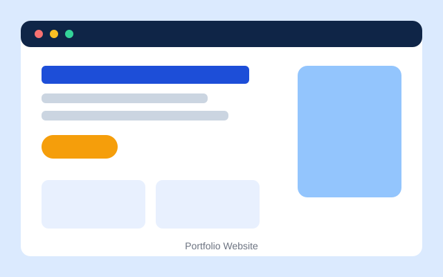

Personal Portfolio Website
HTMLCSSJavaScriptA responsive multi-page portfolio that presents my profile, skills, projects and contact details in a professional layout. It also includes an academic planner and a validated contact form, making it both a showcase and a useful tool.
Key features
- Five linked pages with a consistent colour scheme
- Mobile-friendly navigation menu
- Interactive planner built with JavaScript
- Form validation with clear error messages
What I learned
How to organise a multi-page site, keep styling consistent with an external stylesheet, and make a layout adapt to any screen size.